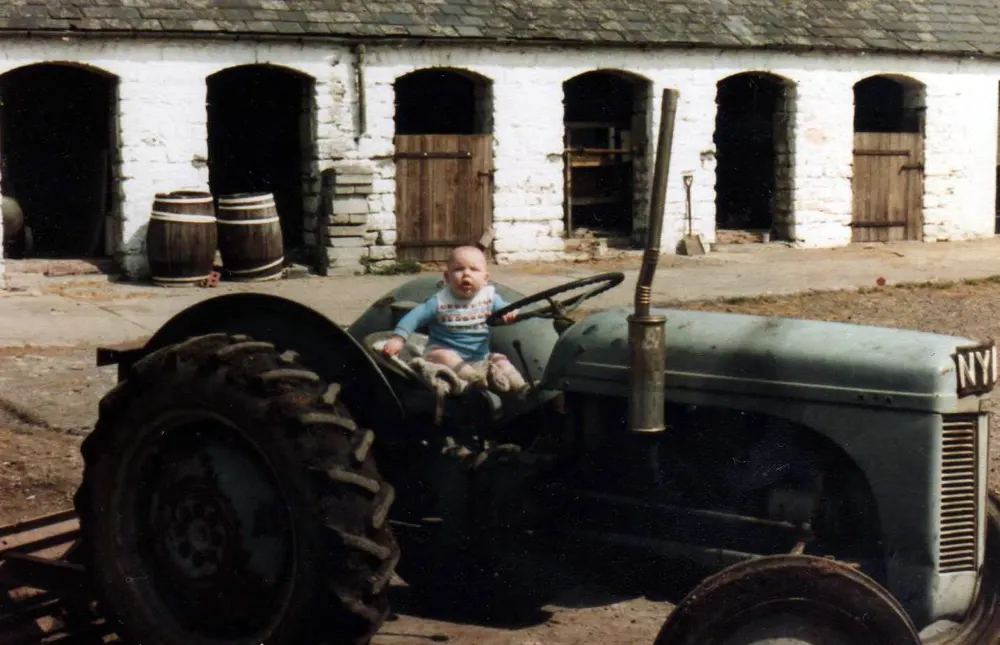

William (Billy) Buckler
· Public statement
To the South Wales Echo, 1989:
“They have taken everything from me and my family. I have lost my livelihood.”

Person
7 posts · 1967–1989
Farmer at Great House Farm (Tŷ Mawr), Llandough; son of Mary (Nancy) Williams. In the papers as Bill or Billy Buckler. His comments here are his own words as the papers printed them.
Portrait: family archive photograph.
To the South Wales Echo, 1989:
“They have taken everything from me and my family. I have lost my livelihood.”
To the South Wales Echo, 24 March 1989:
“I will fight on to the death.”
To the South Wales Echo, 13 December 1988:
“All I’ve got left are the clothes [I] stand up in.”
To the press after the eviction attempt of 29 April 1988:
“I am here to stay and I will fight this to the death.”
To the press after the eviction attempt of 29 April 1988:
“They have got no documents for it. If it’s theirs, why have I never paid a penny in rent for it in my life?”
William (Billy) Buckler announces the passing of his mother, Mary Doreen (Nancy) Williams, formerly Buckler, of Great House Farm, Llandough, on 26 March 1983.
GRO death index, March quarter 1983, South Glamorgan 28/3029, indexed under both BUCKLER and WILLIAMS, Mary Doreen (FreeBMD transcription). Legal Wiki EV-0067.
Mary (Nancy) Williams announces the passing of Frederick Buckler, aged 58.
GRO death index, March quarter 1967, East Glamorgan 8b 364 (FreeBMD transcription); BP Properties Ltd v Buckler [1987] EWCA Civ 2; Legal Wiki, “Two Mary Bucklers?” timeline.
Open the post · Court of Appeal judgment · Legal Wiki timeline